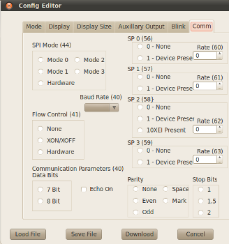

The
Configuration Editor allows you to create, edit, save, and install BOB-4 module
configurations. For a complete listing and explanation of configuration settings,
look up the v command in the BOB-4
Application Guide. Numbers given in the Configuration Editor's control labels
(like this) correspond to "n" parameters associated with the v
command.
XBOB-4 Supplemental Font Memory
To enable the standard 512kB supplemental font memory device in XBOB-4 (Atmel
AT45DB041D), go to the "Comm" tab in the Configuration Editor:

Under "SPI 0 (56),"
select "1-Device Present" and set "Rate (60)" to 4. After
downloading this configuration and rebooting, memory device zero becomes available
for custom font storage. Actual SPI clock rate is 12 MHz (48 MHz / 4), which
is the maximum usable rate in current XBOB-4 hardware.
Download
Transmits the current configuration settings to BOB-4 using communication parameters
previously chosen in the Serial Menu. The new configuration
is automatically saved in flash memory. Configuration downloads are not possible
through BOB-4's debug port. Note that most configuration settings do not take
effect immediately after a configuration download. It's often necessary to reboot
BOB-4 (or XBOB-4) in order to use the new configuration.
Cancel
Cancels all changes and exits the Configuration Editor.
Save File
Saves the current configuration settings to disk. A BOB-4 configuration file
is plain ASCII text, including commands to set all configuration options as
well as a command to store configuration data to flash memory in BOB-4. This
file can also be edited by standard text editing tools and transmitted to BOB-4
through a terminal program, etc. Text editors are usually capable of entering
control codes such as <ESC>, but methods for accomplishing this are inconsistent.
Load File
Loads a previously saved BOB-4 configuration file from disk.